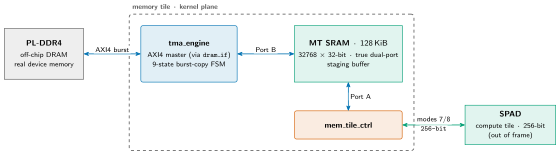
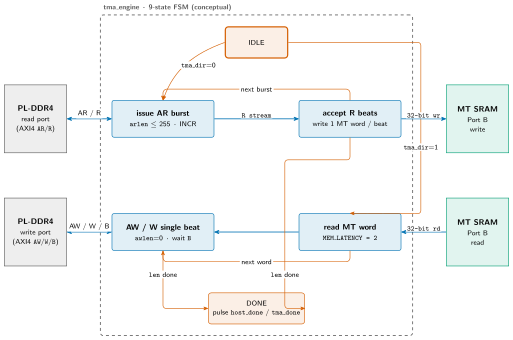
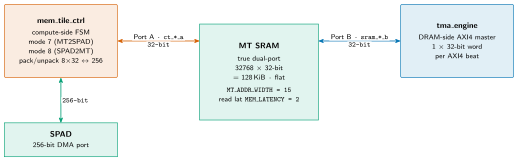
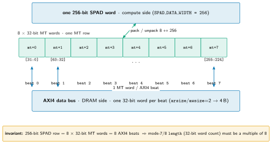
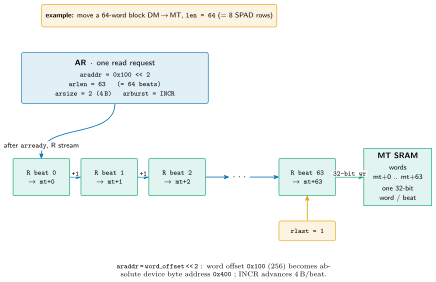

mininpu: Memory Tile¶
[v3]-DEFERRED (RFC #158): not a v1 unit. Retained as v3 reference.
[v3]-DEFERRED (RFC #158): The memory tile is not part of the v1 datapath. In v1, the compute tile's DMU moves data between device memory and SPAD directly; the device-memory path is the interface tile's dm_axi_bridge -> m00_axi (PL-DDR4), and the tma_engine is not in the v1 signal path. The memory tile would serve as a shared-L2 cache and staging tier in [v3], justified by working-set reuse and DDR-latency decoupling at high bandwidth; it is not a bandwidth-delay-product buffer (that is a small on-chip FIFO). See charter §3, §5, §10. The RTL captured below is accurate reference for when MT returns in v3; figures and constants are retained as v3 illustrations.
The memory tile (npu/src/memory_tile/) would be the NPU's kernel-plane bulk-movement IP in [v3]. It owns a 128 KiB on-chip SRAM that would stage tensors between off-chip DRAM and the compute tile's scratchpad (SPAD). Two engines surround that SRAM: tma_engine is an AXI4 master that bursts blocks between MT SRAM and off-chip PL-DDR4, and mem_tile_ctrl moves blocks between MT SRAM and SPAD (retired ABI modes 7/8, not part of v1). This document zooms in five steps: the tile in context, the tma_engine AXI4 datapath, the MT SRAM port structure, the 8 × 32-bit ↔ 256-bit packing, and a worked DM → MT burst. All constants are owned by the SSOT (npu/params.py → npu_config_pkg.sv); per-module FSM / port / timing specifics live in the RTL headers.
Memory tile in context¶
Slide summary (from the deck build)
[v3]-DEFERRED (RFC #158): not a v1 unit; retained as v3 reference.
- [v3] kernel-plane mover: PL-DDR4 ↔ MT SRAM ↔ SPAD.
tma_engine(AXI4 master) would burst PL-DDR4 ↔ MT SRAM over Port B.mem_tile_ctrlwould stream MT SRAM Port A ↔ SPAD (retired ABI modes 7/8).
Figure: mt-context

Zoom 1 --- [v3] tile in context. The [v3] kernel-plane chain PL-DDR4 ↔ MT SRAM ↔ SPAD: tma_engine bursts over AXI4 into MT SRAM Port B; mem_tile_ctrl streams MT SRAM Port A ↔ SPAD (retired ABI modes 7/8). Numbers on the SPAD edge are the retired ABI mode labels.
In [v3] the memory tile would be the NPU's kernel-plane mover, shuttling tensor blocks along the chain PL-DDR4 ↔ MT SRAM ↔ SPAD so the compute tile always executes out of on-chip scratchpad. tma_engine (an AXI4 master, wrapped by dram_if) would burst blocks between off-chip PL-DDR4 and the 128 KiB MT SRAM over MT SRAM Port B; mem_tile_ctrl would then stream those blocks between MT SRAM Port A and SPAD (retired ABI modes 7/8). The host plane (interface tile, device_mem) and compute engines (MXU/VPU) are out of frame here --- see architecture.
tma_engine AXI4 datapath¶
Slide summary (from the deck build)
- One FSM, two directions: fan from
IDLEbytma_dir, converge onDONE. - DM→MT: AXI4 read burst (≤256 beats) → write 1 MT word / beat.
- MT→DM: read 1 MT word → single-beat write (
awlen=0), loop per word.
Figure: mt-tma-fsm

Zoom 2 --- the two transfer directions through the shared FSM. DM→MT: AXI4 read burst (≤256 beats) → write each beat to MT SRAM, re-issuing AR until done. MT→DM: read one MT SRAM word → single-beat AXI4 write, looping per word. Both paths fan from IDLE (by tma_dir) and converge on DONE. Box-for-box state names and handshakes are in tma_engine.sv.
Inside tma_engine, one FSM serves two transfer directions against the AXI4 master port. DM→MT issues an AXI4 read-burst (AR with arlen ≤ 255 → up to 256 beats, arsize=2 → 4 B/beat, INCR), then accepts the R stream and writes one MT SRAM word per beat --- re-issuing AR for the next burst until len words are moved. MT→DM has no write bursting: it reads one MT SRAM word, then drives a single-beat AXI4 write (AW/W with awlen=0, wlast=1) and waits for the B response, looping per word. The AXI4 data bus is 32-bit (one MT word per beat); devmem_base (AXI-Lite 0x3C) plus the word offset, shifted left 2, forms the DRAM byte address. The exact 9 FSM states live in tma_engine.sv; above is the conceptual shape.
MT SRAM port structure¶
Slide summary (from the deck build)
- True dual-port, single-clock, flat (non-banked) 32-bit-word SRAM.
- Port A (
ct_*_a): compute side,mem_tile_ctrl, packs 8×32 ↔ 256. - Port B (
sram_*_b): DRAM side,tma_engine, 1 word / AXI4 beat. MT_ADDR_WIDTH = 15; registered read latencyMEM_LATENCY = 2.
Figure: mt-sram-ports

Zoom 3 --- the dual-port SRAM (v3 reference). Port A (ct_*_a) faces mem_tile_ctrl, which on the SPAD side packs/unpacks 8 × 32-bit words ↔ one 256-bit SPAD word (retired ABI modes 7/8). Port B (sram_*_b) faces tma_engine, one 32-bit word per AXI4 beat. Both ports are 15-bit word-addressed with a 2-cycle registered read latency.
The MT SRAM (mem_tile.sv) is a true dual-port, single-clock, flat (non-banked) 32-bit-word SRAM. The two ports serve the two engines that surround it. Port A is the compute-side port driven by mem_tile_ctrl (retired ABI modes 7/8): on its SPAD side it packs/unpacks 8 × 32-bit MT words ↔ one 256-bit SPAD word --- so a length (32-bit word count) must be a multiple of 8. Port B is the DRAM-side port driven by tma_engine (one 32-bit word per AXI4 beat). Both ports are word-addressed, MT_ADDR_WIDTH = 15 bits, with a registered read latency of MEM_LATENCY = 2 cycles.
Row packing: 8 × 32-bit ↔ 256-bit¶
Slide summary (from the deck build)
- One row = 256-bit SPAD word = 8 × 32-bit MT words = 8 AXI4 beats.
- Compute side packs/unpacks 8 ↔ 256; DRAM side moves 1 word / beat.
- Hence
length(32-bit word count) must be a multiple of 8 (former ABI naming: modes 7/8, now retired).
Figure: mt-packing

Zoom 4 --- data layout. A single 256-bit SPAD word maps to 8 contiguous 32-bit MT words (mt+0 .. mt+7); each 32-bit word is also exactly one AXI4 beat on the DRAM side. The compute side moves the whole 256-bit row at once; the AXI4 side moves it word-by-word. The two granularities meet at the multiple-of-8 invariant.
The memory tile sits between two different access granularities, and this figure is the layout that reconciles them. On the compute side the SPAD bus is 256-bit (SPAD_DATA_WIDTH = 256), so mem_tile_ctrl reads or writes a whole row at once; on the storage and DRAM side the MT SRAM word and the AXI4 data bus are both 32-bit. One 256-bit SPAD word therefore occupies 8 contiguous 32-bit MT words (mt+0 .. mt+7), bit-slice [31:0] in mt+0 through [255:224] in mt+7. The tma_engine moves the same row as 8 AXI4 beats, one 32-bit word per beat. Because the row is the pack/unpack unit, a length expressed as a 32-bit word count must be a multiple of 8; otherwise a partial row would be left unpacked. (The former ABI encoding referenced these transfers as modes 7/8; those mode numbers are now retired.)
Worked example: a DM → MT burst¶
Slide summary (from the deck build)
- Move a 64-word block DM → MT (
len=64= 8 SPAD rows). - AR:
(devmem_base + 0x100) << 2,arlen=63(→ 64 beats), INCR. - R: one MT word per beat ---
mt+0 ... mt+63;rlaston beat 63.
Figure: mt-worked

Zoom 5 --- a concrete DM→MT burst. One AR (araddr = (devmem_base + 0x100) << 2, arlen = 63, INCR) launches a 64-beat read; each accepted R beat writes one 32-bit MT word at a consecutive address, mt+0 through mt+63, with rlast on the final beat. Word offset 0x100 (256) becomes byte address 0x400 after the left-shift-by-2.
To make the datapath concrete, follow a single len = 64 word transfer (DM → MT --- eight 256-bit SPAD rows). tma_engine issues one AR: araddr = (devmem_base + 0x100) << 2, arlen = 63 (so 64 beats), arsize = 2 (4 B), arburst = INCR. The word offset 0x100 (256) becomes byte address 0x400 after the left-shift-by-2, relative to devmem_base (AXI-Lite 0x3C). After arready, the R channel streams 64 beats; the engine writes each beat to a consecutive MT address --- mt+0, mt+1, mt+2, …, mt+63 --- and rlast = 1 on beat 63 ends the burst (here len is met in a single burst, so the FSM goes straight to DONE rather than re-issuing AR).
Module roles¶
In [v3] the memory tile would compose a wrapper, the SRAM, and the two engines (RTL captured here as v3 reference):
Table: [v3] memory tile module roles (RTL captured here as v3 reference; not part of v1).
| Module | Source | Role |
|---|---|---|
memory_tile |
memory_tile.sv |
Tile wrapper: composes mem_tile + mem_tile_ctrl + dram_if; exposes the arbiter, SPAD-stream, TMA-instruction, host-trigger, and AXI4-master port groups. |
mem_tile |
mem_tile.sv |
Pure true-dual-port SRAM, the staging buffer. Port A = mem_tile_ctrl (SPAD side); Port B = tma_engine (DRAM side). |
mem_tile_ctrl |
mem_tile_ctrl.sv |
MT↔SPAD burst sub-FSM (retired ABI modes 7/8). Packs/unpacks 8 × 32-bit MT words ↔ one 256-bit SPAD word; length_in is a 32-bit word count and must be a multiple of 8. |
tma_engine |
tma_engine.sv |
Tensor Memory Access engine: AXI4 master moving blocks MT↔PL-DDR4. Two trigger sources: retired ABI modes 5/6 (host-initiated) and TMA instructions from the sequencer (TMA wins on tie). |
dram_if |
dram_if.sv |
Thin DRAM-interface wrapper around tma_engine; surfaces the AXI4-master channels and MT SRAM Port B. |
Verified constants¶
All numbers below are read from npu_config_pkg.sv (generated from npu/params.py --- the SSOT). Never hand-edit; never guess.
Table: verified constants cited from npu_config_pkg.sv (generated from npu/params.py --- the SSOT; never hand-edit).
| Quantity | Value | Source constant |
|---|---|---|
| MT SRAM address width | 15 bits | MT_ADDR_WIDTH = 15 |
| MT SRAM depth | 2^15 = 32768 words | derived from MT_ADDR_WIDTH |
| MT SRAM word width | 32 bits (both ports) | DATA_WIDTH = 32 |
| MT SRAM capacity | 32768 × 32-bit = 128 KiB | derived (phys = logical, no banking) |
| SPAD DMA bus width | 256 bits (= 8 × 32-bit) | SPAD_DATA_WIDTH = 256 |
| AXI4 master data width | 32 bits / beat (arsize/awsize=2 → 4 B) |
tma_engine.sv (1 MT word/beat) |
| DM→MT burst length | ≤ 256 beats (arlen ≤ 255, INCR) |
tma_engine.sv |
| MT→DM write | single-beat (awlen = 0) per word |
tma_engine.sv |
| SRAM read latency | 2 cycles (addr-valid → data-valid) | MEM_LATENCY = 2 |
| Device-memory address width | 16 bits → 65536 words = 256 KiB | DM_ADDR_WIDTH = 16 (stub) |
PL-DDR4 gap (presentation-level)¶
Slide summary (from the deck build)
tma_engineis an AXI4 master targeting off-chip PL-DDR4.- Sim target: the
sim/axi4_ram.pyAXI4-RAM model. - Board target: a DDR4 MIG controller --- not yet wired.
device_memstays a 256 KiB BRAM stub (DM_ADDR_WIDTH = 16) until the MIG path lands.
tma_engine is an AXI4 master targeting off-chip PL-DDR4. In simulation that target is the sim/axi4_ram.py AXI4-RAM model; on the board it is meant to be a DDR4 MIG controller, which is not yet wired. The on-device device_mem remains a 256 KiB BRAM stub (DM_ADDR_WIDTH = 16), standing in for true device memory until the MIG path lands. The device-memory model and that gap live in the interface tile --- see interface_tile for device_mem.
For end-to-end, cross-module data-movement timing (v1 path: host → DRAM → SPAD via the interface tile; [v3] path with MT: host → DRAM → MT → SPAD), see data_movement; for the top-level tile composition, see architecture. The RTL headers in npu/src/memory_tile/*.sv are the authority for FSM states, port lists, and timing --- this document presents the concept and the verified summary (as v3 reference material).